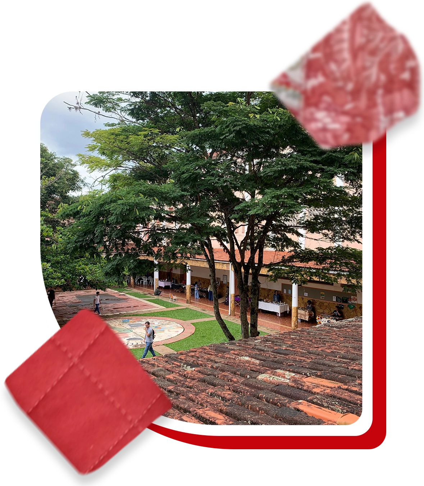
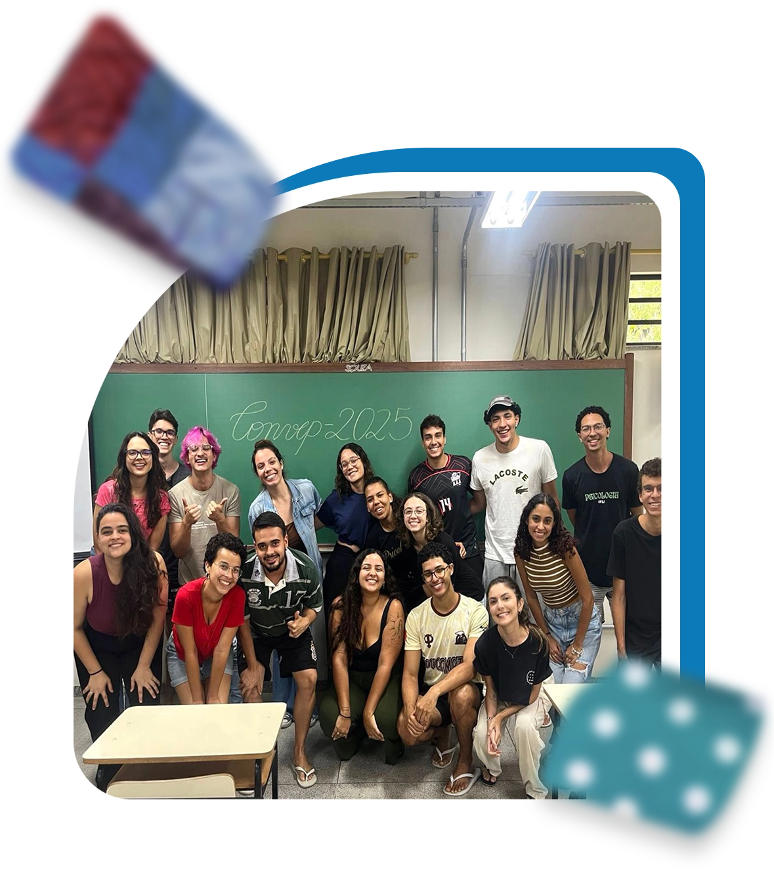
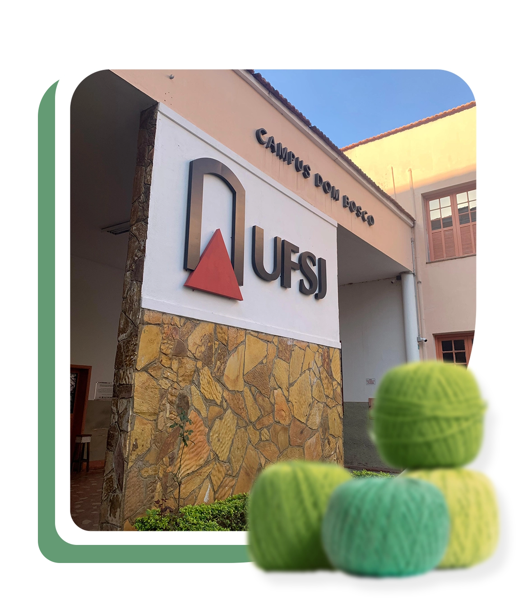

6º Congresso das Vertentes de Psicologia
Universidade Federal de São João del-Rei
7 A 11 DE ABRIL DE 2025
Parte de um todo, fração.
Em um mundo cada vez mais interconectado e marcado por demandas complexas e multifacetadas, torna-se essencial que a formação em Psicologia prepare os estudantes para compreenderem e responderem de forma criteriosa às diversas interações entre o indivíduo e o coletivo, entre o sujeito e o contexto em que está inserido. Essa abordagem amplia não apenas nossa visão sobre o papel da ciência psicológica, mas também o caráter e a capacidade de oferecer respostas inovadoras e éticas às questões contemporâneas.
Com essa premissa, nós, da Comissão Organizadora do CONVEP 2025, temos o prazer de propor um espaço de aprendizado, diálogo e reflexão sobre como nosso campo pode ser compreendido, ampliado e conectado com outras áreas do conhecimento. Nosso objetivo é explorar as interdisciplinaridades que permeiam a Psicologia, promovendo debates que transcendam os limites tradicionais da prática e do ensino.
Acreditamos que o vasto e rico campo de atuação da Psicologia deve ser continuamente explorado e fortalecido. Para isso, propomos a criação de experiências que possibilitem o contato com ideias pouco representadas em currículos convencionais, abrindo espaço para discussões inovadoras que integrem perspectivas variadas. Ao trazer à tona temas e práticas de campos muitas vezes negligenciados, buscamos ampliar as fronteiras do saber psicológico.
Além disso, queremos oferecer aos participantes do Congresso a oportunidade de descobrir e aprofundar-se em diferentes possibilidades de atuação profissional. Por meio de uma programação diversificada e dinâmica, apresentaremos caminhos que ampliam o horizonte de escolhas e demonstram como a Psicologia pode dialogar com áreas como tecnologia, saúde coletiva, educação, justiça, meio ambiente, entre outras.
No CONVEP 2025, queremos reafirmar o compromisso de agregar e dialogar, construindo uma Psicologia mais inclusiva, abrangente e transformadora.


No CONVEP 2023, nos dedicamos à discussão sobre saúde coletiva, explorando o conceito de uma saúde construída por e para todos. Promovemos uma integração entre a Psicologia e o campo da saúde no Brasil, ampliando nossa visão sobre práticas de cuidado sob uma perspectiva interdisciplinar e coletiva.
Agora, no CONVEP 2025, seguimos adiante, traçando uma missão ainda mais abrangente: inspirados pelo legado de 2023, buscamos expandir nosso alcance, promovendo uma interação mais profunda e diversificada entre a Psicologia e outras áreas do conhecimento. A proposta deste ano é ousada: fortalecer conexões entre diferentes campos de atuação, reconhecendo e valorizando os pontos de interseção que podem enriquecer nossa prática.
Nosso objetivo é ir além dos limites tradicionais da Psicologia, explorando como outras áreas profissionais podem contribuir para uma visão integrada e holística sobre a humana não só na vida em si, mas em sua dimensão coletiva e contínua. Queremos também fomentar uma reflexão mais ampla sobre a identidade e o papel do psicólogo na sociedade contemporânea.
O CONVEP 2025 é, portanto, um convite para explorarmos novas perspectivas sobre nossa prática profissional, redefinindo fronteiras e expandindo horizontes.
O surgimento do CONVEP ocorreu após os movimentos de ocupação e a greve estudantil de 2016. É fruto da organização e luta dos estudantes, que encontraram nele, um meio para fazer suas vozes ecoarem para lugares além da sala de aula, promovendo um debate contemporâneo e necessário, moldando suas próprias formações e subjetividades.
O CONVEP também foi essencial para a construção de um sentimento de coletividade, fundamental para a organização de classe pela defesa de princípios básicos, além da pesquisa uma grande potencialidade positiva para seu engajamento político. Ao mesmo discussões sobre questões diversas, é possível ver o congresso como uma trama de resistência, pensando nesse questões voltadas para o campo da psicologia e desse vir dialogando com outras diversas áreas com o objetivo de que o conhecimento seja ampliado.

Prof. Dr. Mário César Rezende Andrade
Abner Jabes de Oliveira Lapa
Adriana Cristina Fialho Viana
Amanda de Lima Souza Vasconcellos Noronha Menezes Dias
Amanda Vargas Ferrer de Oliveira
Ana Beatriz Santos
Ana Luiza Leme Brisola
Ane Caroline Romão de Melo Resende
Bernardo Onílio Silva Campos
Camile Fofano de Almeida
Clara Fernandes Teodoro
Gabriela de Oliveira Ferreira
Igor Vinícius Melzani Pereira
João Marcos Almeida Rocha
Larissa Pereira da Silva
Leandro Amaro Silva Salomão
Leonardo Ribeiro de Castro
Maria Clara Silva Tavares
Maria Eduarda Ferreira Eleuterio
Maria Fernanda Lobo Rezende
Matheus Luiz Marques de Lima
Melissa Neves Silva
Nívea Maria Soares Abreu
Pablo Edson Souza
Paula Ferreira Silva
Pedro Lucas Dias Jardim
Pedro Pereira Alves Feitosa
Ryan Carlos Almeida de Oliveira
Simone Mirella dos Santos
Thayane Karen Souza Corrêa Lima
Profª. Drª. Alessandra Pimentel – UFSJ
Prof. Dr. Celso Francisco Tondin – UFSJ
Prof. Dr. Dener Luiz da Silva – UFSJ
Profª. Ma. Diely Fátima Souza – Escola Mineira de Humanidades (EMH)
Prof. Dr. Fernando Santana de Paiva – UFJF
Prof. Dr. Fuad Kyrillos Neto – UFSJ
Profª. Drª. Isabela Maria Magalhães Lima – UFSJ
Profª. Drª. Isabela Saraiva de Queiroz – UFSJ
Prof. Dra. Jacqueline Meireles – UFSJ
Profª. Ma. Julia Costa de Oliveira – UFMG
Prof. Dr. Lucas Cordeiro Freitas – UFSJ
Profª. Drª. Magali Milene Silva – UFSJ
Prof. Dr. Marco Antônio Silva Alvarenga – UFSJ
Profª. Drª. Maria Gláucia Pires Calzavara – UFSJ
Profª. Drª. Maria Nivalda de Carvalho Freitas – UFSJ
Profª. Drª. Marília Novais da Mata Machado – UFMG
Prof. Dr. Mário César Rezende Andrade – UFSJ
Profª. Drª. Mônia Aparecida da Silva – UFSJ
Prof. Dr. Neyfsom Carlos Fernandes Matias – UFSJ
Prof. Dr. Ricardo Dias de Castro – UFMG
Profª. Drª. Rosângela Maria de Almeida Camarano Leal – UFSJ
Prof. Dr. Wilson Camilo Chaves – UFSJ
Aos estudantes da UFSJ que nos ajudaram a idealizar o Congresso e por participarem ativamente na sua organização. As egressas e egressos profissionais que nos auxiliaram para a realização deste evento.
Aos professores do Departamento de Psicologia da UFSJ e de outras instituições por participarem da Comissão Científica.
Aos servidores e terceirizados nos auxiliaram durante a realização deste evento.
À Coordenação de Psicologia (COPSI) e ao Departamento de Psicologia (DPSIC) pelo apoio e por nos ajudar imensamente em partes fundamentais da organização.
À Universidade Federal de São João del-Rei por nos auxiliar na organização deste evento.